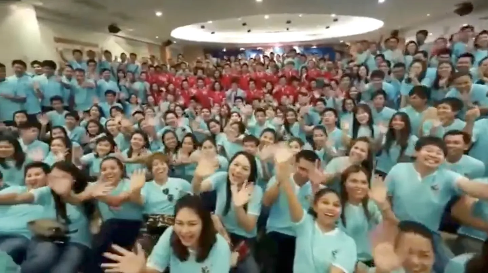
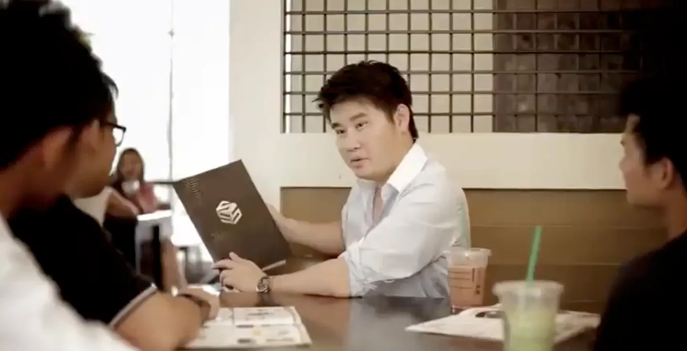
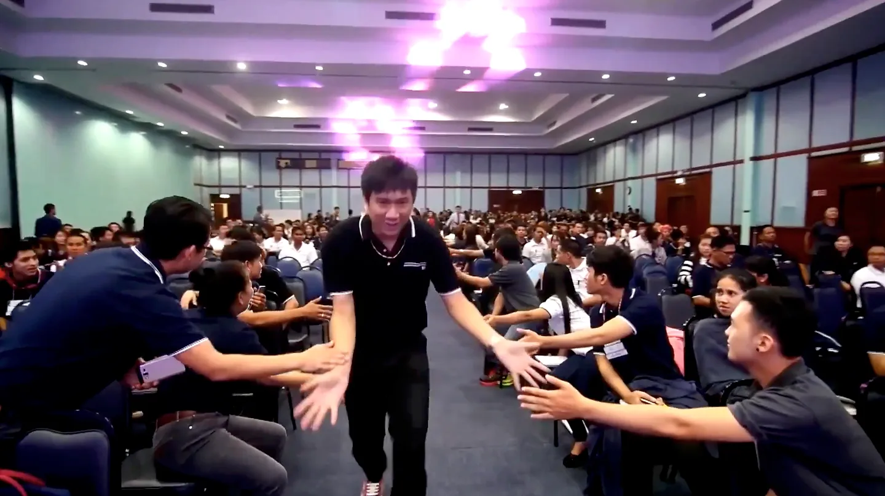
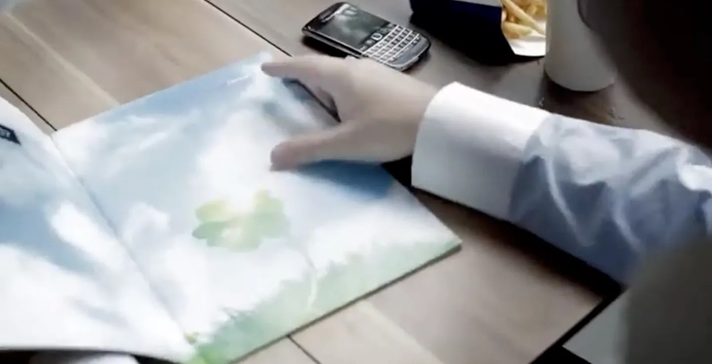
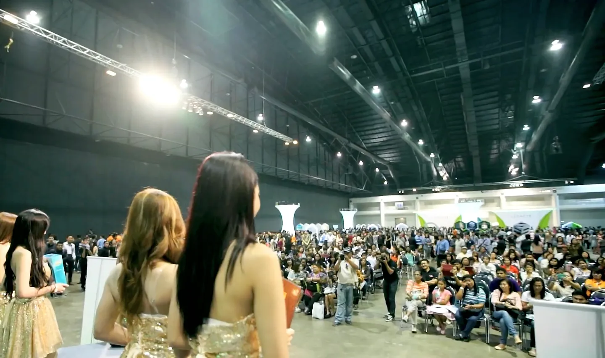
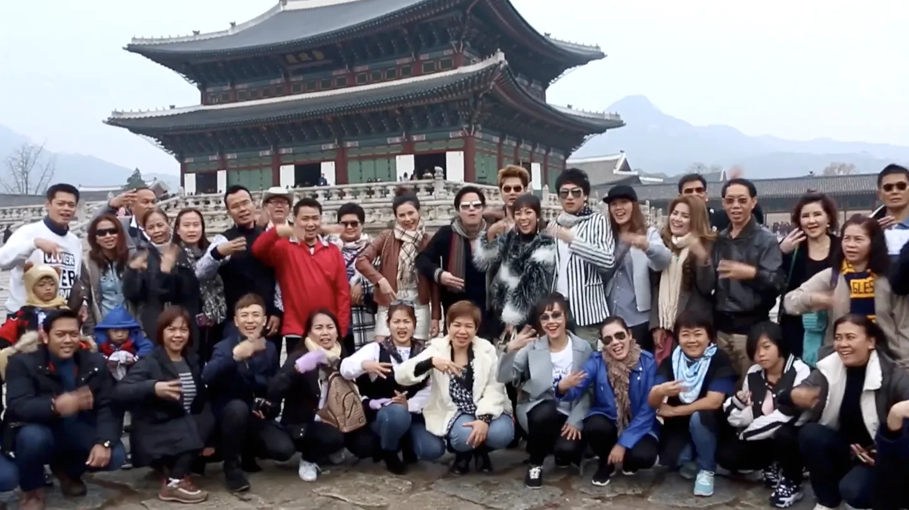
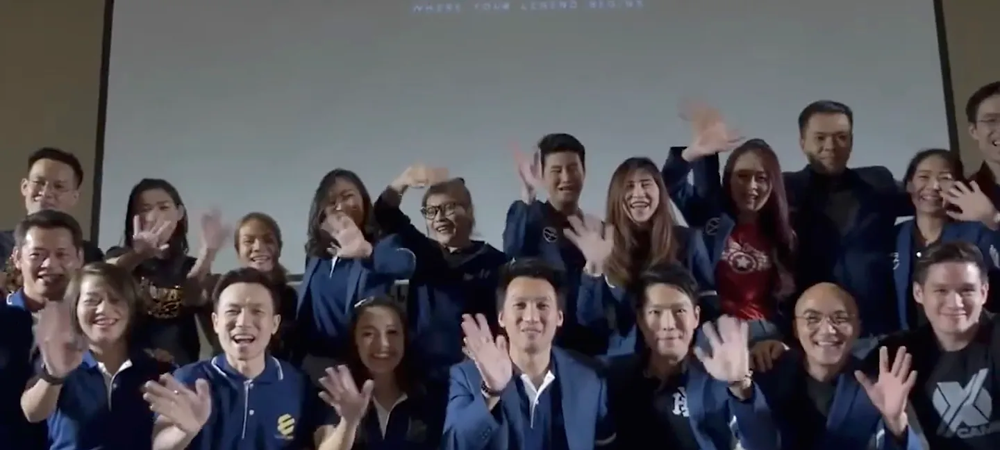
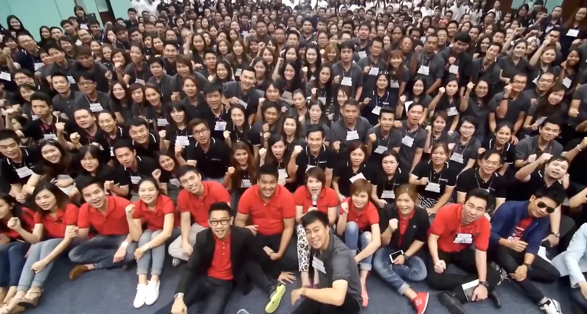

✳ 20 YEARS. COUNTLESS GOOD THINGS.
บางความโชคดี
ก็เริ่มจาก
การได้เจอกัน
20 ปี ของความหวังดีที่ส่งต่อ
และผู้คนที่ออกไปเติบโตในแบบของตัวเอง

เลื่อนลง แล้วค่อย ๆ นึกถึงวันนั้น01 / ONE TABLE. A NEW POSSIBILITY.
โต๊ะตัวเดียว
อาจเปลี่ยน
อะไรได้มากมาย
จำบทสนทนาครั้งแรกได้ไหม
ใครสักคนที่นั่งฟังเรา และแบ่งปันสิ่งดี ๆ ให้กัน
จากหนึ่งคน เป็นสองคน เป็นความหวังครั้งใหม่

02 / A LITTLE MORE COURAGE.
เราได้รู้จักคน
และได้รู้จัก
ตัวเองมากขึ้น
ในห้องประชุม ในคำแนะนำ ในเสียงปรบมือ
เราได้ลอง ได้ฝึก ได้ผิดพลาด
และค่อย ๆ กล้าเป็นตัวเองมากกว่าเมื่อวาน

03 / GROWTH HAPPENS QUIETLY, TOO.
บางก้าวสำคัญ
เกิดขึ้นตอนที่
เราอยู่กับตัวเอง
หนังสือเล่มหนึ่ง ความคิดใหม่หนึ่งเรื่อง
ความรู้ ทักษะ และมุมมองที่ติดตัวเราไป
แม้วันนี้เราจะไม่ได้อยู่ในห้องเดียวกันแล้ว

04 / EVERY SEAT, A POSSIBILITY.
จากเก้าอี้ว่าง
นับหมื่นตัว
สู่ผู้คนที่มีความหวัง
ครั้งหนึ่ง เราเคยอยู่ท่ามกลางผู้คนมากมาย
โอกาสที่ถูกส่งต่อ เติมฮอลใหญ่จนเต็ม
ก่อนทุกคนจะนำสิ่งดี ๆ ออกไปสร้างสรรค์ต่อ

05 / THE WORLD FELT A LITTLE BIGGER.
บางความทรงจำ
พาเราไปไกลกว่า
ที่เคยคิดไว้
เที่ยวบินแรก ๆ เมืองที่ไม่คุ้นเคย
เสียงหัวเราะระหว่างทาง และภาพหมู่ที่ยังอยู่
บางทีสิ่งที่จำได้ชัดที่สุด ก็คือคนที่ไปด้วยกัน

06 / YOUR PATH IS YOURS.
เราไม่ได้เดิน
ทางเดียวกันตลอด
และนั่นก็งดงาม
ต่างงาน ต่างความฝัน ต่างจังหวะชีวิต
แต่ความหวังดีที่เคยได้รับ ยังเดินทางต่อได้
ผ่านสิ่งเล็ก ๆ ที่เรามอบให้คนรอบตัว
Clover เป็นช่วงเวลาหนึ่งที่เราได้เติบโตด้วยกัน
ทุกเส้นทางหลังจากนั้น เป็นของคุณ

07 / SAME WARMTH. NEW STORIES.
กลับมาที่โต๊ะเดิม
พร้อมเรื่องเล่า
ที่มากกว่าเดิม
กลับมาฟังว่าชีวิตพาแต่ละคนไปถึงไหน
แบ่งปันรอยยิ้ม ความรู้ และแรงใจให้กันอีกครั้ง
แล้วออกไปเติบโตต่อ ในเส้นทางของเรา

WELCOME HOME
เก้าอี้ตัวนี้
ยังรอคุณอยู่
ถึงพี่น้องผู้นำ Clover ที่เราคิดถึง
ไม่ว่าวันนี้คุณกำลังทำอะไร หรือเดินอยู่บนเส้นทางไหน
กลับมากินข้าว ฟังเพลง และเล่าเรื่องชีวิตให้กันฟังนะ
OCTOBER 2026
สถานที่จะแจ้งให้ทราบเร็ว ๆ นี้
เย็นวันนั้น เราจะ…
- กลับมาเจอกันทักทาย ถ่ายรูป และเริ่มมื้อเย็นด้วยกัน
- ปล่อยให้เพลงพาย้อนวันวานดนตรีสด อาหาร และบทสนทนาสบาย ๆ
- วันนี้เพื่อนเราเป็นอย่างไรบ้างแบ่งปันเรื่องราวที่แต่ละคนอยากเล่า
- กลับมาหัวเราะด้วยกันเกมและความทรงจำสนุก ๆ ของพวกเรา
- อยู่คุยกันอีกหน่อยฟังเพลง ร้องเพลง และเติมความทรงจำใหม่
23:00 น. ร่วมเป่าเค้กและร้องเพลงวันเกิดด้วยกัน
กลับบ้านด้วยกันไหม
ฝากชื่อและช่องทางติดต่อไว้
เราจะส่งรายละเอียดสถานที่ให้เมื่อยืนยันแล้ว